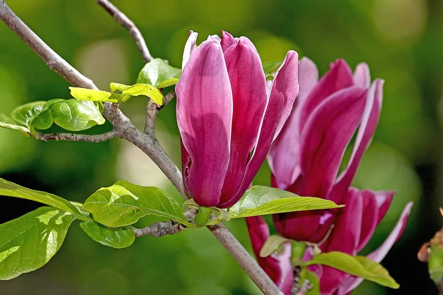

乔木 · 植物界
紫玉兰 Magnolia liliiflora

木兰科木兰属落叶灌木或小乔木，花被片外紫内白、先花后叶，栽培历史悠久，花蕾入药称“辛夷”。
- 分类
- 门被子植物门纲木兰纲目木兰目科木兰科属木兰属
- 栖息环境
- 海拔 300–1600 米的山坡林缘与溪谷，喜光、喜温暖湿润
- 地理分布
- 原产中国四川、云南、湖北等地；全国及世界各地广泛栽培
- 保护级别
- IUCN 暂无评估；野生种群少见，栽培品种极为普遍
物种志
紫玉兰为落叶灌木或小乔木，高可达 3–4 米，常丛生，树皮灰褐色，小枝紫褐色。叶片椭圆状倒卵形，长 8–18 厘米，先端渐尖，上面深绿色，下面沿脉有短柔毛。花先叶开放或与叶同放，单生枝顶，花被片 9 枚，外轮 3 枚较小、紫绿色，内两轮紫红色、内面白色，花大而艳丽；聚合果圆柱形，成熟时开裂露出红色种子。
紫玉兰原产中国中部，四川、云南、湖北等地有野生分布，现全国及世界各地广泛栽培，栽培历史可追溯至唐代。它喜光、喜温暖湿润气候与肥沃排水良好的微酸性土壤，耐寒性较强，是早春重要的观花树种。其花蕾入药称“辛夷”，可散风寒、通鼻窍，是治疗鼻炎的传统药材。紫玉兰也是二乔玉兰等杂交品种的重要亲本之一，在园林中常与白玉兰、二乔玉兰搭配种植。
形态与习性
- 株高3–4 米，常丛生，小枝紫褐色
- 花期3–4 月，先花后叶
- 果期8–9 月，聚合果圆柱形
- 光照喜光，幼树稍耐阴
- 水分喜湿润，怕积水
- 土壤肥沃、排水良好的微酸性壤土
- 主要用途早春观赏、花蕾入药（辛夷）与杂交亲本
趣味知识
- 紫玉兰的花蕾入药称“辛夷”，是中医治疗鼻塞、鼻炎的常用药材。
- 它的花被片外紫内白，盛开时像一支支紫红色的小毛笔，因此又名“木笔”。
- 紫玉兰与白玉兰杂交产生了著名的二乔玉兰，花色从淡粉到深紫变化丰富。
- 紫玉兰栽培历史很久，唐代已有庭院种植的记载。